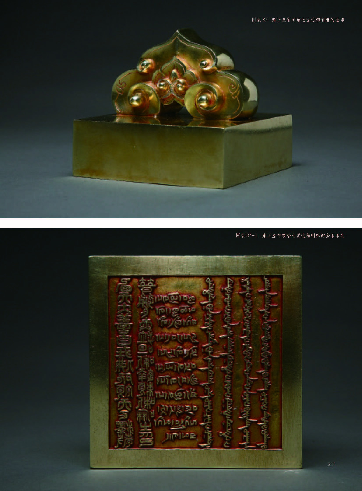

雍正皇帝颁给七世达赖喇嘛的金印
གོང་མ་ཡུང་ཀྲིན་གྱིས་ཏཱ་ལའི་བླ་མ་སྐུ་ཕྲེང་བདུན་པར་གནང་བའི་གསེར་ཐམ།
Golden seal awarded by Emperor Yongzheng to the Seventh Dalai Lama

金
汉、藏、满、蒙文
清雍正元年（1723）
11.35×11.35×10.3厘米
西藏博物馆藏
此为雍正皇帝颁赐给七世达赖喇嘛的金印。内容基本与顺治皇帝颁赐给五世达赖喇嘛的金印相同。与五世达赖喇嘛金印相比，汉文有一字之差，藏文差异较大，最大差异是新增了蒙古文。在保存至今的清中央政府颁赐给历世达赖喇嘛的印信中，这是最重要的印信之一。（仁青卓玛）
版权所有 中国藏学研究中心。 保留所有权利。 京ICP备06045333号-1
京公网安备 11010502035580号